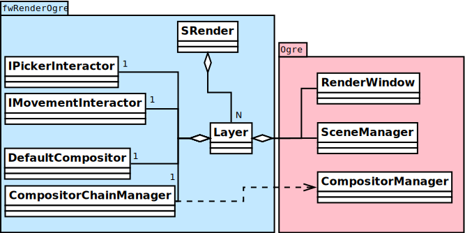

Ogre 3D in FW4SPL
Flavien Bridault
Training - Strasbourg, 20th January 2016
Overview
- Ogre 3D
- Architecture overview
- Scripting
- Generic scene
- Architecture
- Basics
- Adaptors
- Tutorials
- Material
- Compositors
- Transparency
Ogre 3D
History
- Object-Oriented Graphics Rendering Engine
- Started in 2000, first release in 2005
- Latest stable 1.9 (2013), preview 2.1
- Used in free or commercial games
- Ankh series (2005-2009)
- TorchLight I (2009)
- Zombie Driver (2009)
- TorchLight II (2012-2015)
- Rendering Engine, not actually a game engine
Ogre 3D
Features
- High-level abstractions
- Cross-platform : Windows, Linux, MacOSX and Android
- Scene-graph
- Resource management (meshes, textures, material/shaders)
- Vertex animation (CPU and GPU)
- Material LOD
- Material scripting
- Multipass effects
- Progressive meshes (manual or auto)
- Shadows (image or object-based)
- Compositors
- Particles system
- Ribbon trails
- BSP/PVS, Octree, portals
- Texture == image
Ogre 3D
Why ?
- VTK
- is oriented towards visualization
- is far from the hardware, very high-level abstraction
- does not use cutting-edge OpenGL features
- Other
- Unreal, Unity
- Irrlicht
- G3D
Architecture overview
Ogre 3D
Architecture overview

Ogre 3D
::Ogre::Root
- Entry point in the Ogre system
- First to be created, last to be deleted
- Holds scene and resource managers
- Holds the render system
- Triggers the rendering of frames (continuous or on demand)
Ogre 3D
::Ogre::RenderSystem
- Abstraction of the underlying 3D API (DirectX/OpenGL)
- Used to create render windows ::Ogre::RenderWindow
- Instantiated dynamically by selecting a shared library
- DirectX9
- DirectX11
- OpenGL
- OpenGL3+
Ogre 3D
::Ogre::SceneManager
- Organize the content of the 3D scene through a graph :
- objects
- cameras
- lights
- Differents spatial structures used (BSP, PVS, etc...) according to the scene type
- Responsible of selecting the objects to be rendered each frame
Ogre 3D
::Ogre::Entity
- Movable or static object in the scene
- Attached to a ::Ogre::SceneNode
- Instantiation of a mesh in the 3D scene
- A mesh may have multiple materials : for each ::Ogre::SubMesh, a ::Ogre::SubEntity is created in the entity
Ogre 3D
::Ogre::Material
- Render states
- depth buffer test/write
- culling/mode
- blending equation
- polygon fill mode (point, wireframe, solid)
- ...
- Shader
- vertex
- hull
- domain
- geometry
- fragment
Ogre 3D
::Ogre::ResourceGroupManager
- one for each resource type:
- MeshManager
- MaterialManager
- TextureManager
- CompositorManager
- allows to create/load/unload/destroy resources
- few direct interactions, called by other parts of the Ogre system
Ogre 3D
::Ogre::ResourceGroupManager
- Resources are created by name, looking through registered resource locations
- ::Ogre::ResourceGroupManager::addResourceLocation()
- configured easily from ::Ogre::ConfigFile (.cfg)
# resources.cfg [compositors] FileSystem=./Bundles/material_0-1/Media/compositors [materials] FileSystem=./Bundles/material_0-1/Media/materials/ FileSystem=./Bundles/materialExt_0-1/Media/materials/ [textures] FileSystem=./Bundles/material_0-1/Media/textures/
Scripting
Ogre 3D
Materials
// dummy.material
vertex_program dummy_VP glsl
{
source dummy_VP.glsl
default_params
{
param_named_auto u_worldViewProj worldviewproj_matrix
}
}
fragment_program dummy_FP glsl
{
source dummy_FP.glsl
}
material dummy
{
technique
{
pass
{
cull_hardware none
depth_write on
polygon_mode wireframe
vertex_program_ref dummy_VP
{
}
fragment_program_ref dummy_FP
{
}
texture_unit
{
texture image.png
}
}
}
}Ogre 3D
Materials
- Materials are parsed from (.material) files from the registered resource locations
- GLSL programs can be written in a .material file
- be careful of the parsing order if you share programs accross multiple files
- they can be put in .program, read before all .material
Ogre 3D
Materials
- Once parsed during initialization, easy to use:
entity->setMaterialName("dummy");
Ogre 3D
Compositors
- Pipeline of successive rendering passes:
- geometric pass
- full screen pass
Overview
- Ogre 3D
- Architecture overview
- Scripting
- Generic scene
- Architecture
- Basics
- Adaptors
- Tutorials
- Material
- Compositors
- Transparency
Generic scene architecture
Generic scene
Architecture
Same principle than our generic scene using VTK
- A render service, working on a ::fwData::Composite data, acts as a manager
- Sub-services named as adaptors work on the keys of the composite
- Adaptors are configured in XML or instantiated by the C++ code
- The manager listens to its composite, and supervises the starting and stopping of adaptors
- When an object is added/removed, the adaptor in the XML configuration is started/stopped
<service uid="genericSceneOgre" impl="::fwRenderOgre::SRender" autoConnect="yes"> <scene> <background topColor="#DDDDDD" bottomColor="#43958D" topScale="0.7" bottomScale="1.0" /> <renderer id="default" layer="1" /> <adaptor id="cameraAdaptor" class="::visuOgreAdaptor::SCamera" objectId="cameraTF"> <config renderer="default" /> </adaptor> <adaptor id="meshAdaptor" class="::visuOgreAdaptor::SMesh" objectId="meshKey"> <config renderer="default" transform="meshTF" /> </adaptor> <adaptor id="transformAdaptor" class="::visuOgreAdaptor::STransform" objectId="transform"> <config renderer="default" transform="meshTF"/> </adaptor> </scene> </service> <item key="cameraTF"> <object uid="cameraTF" type="::fwData::TransformationMatrix3D" /> </item> <item key="meshKey"> <object uid="meshUid" type="::fwData::Mesh" /> </item> <item key="transform"> <object uid="transformUid" type="::fwData::TransformationMatrix3D" /> </item>
Generic scene
Library design
- the library fwRenderOgre contains the core
- SRender service
- Interactors
- the bundle visu allows to register SRender
- the bundle visuOgreQt contains the Qt widget and its interactions
- the bundle visuOgreAdaptor contains the core adaptors
- SCamera
- STransform
- SMesh
- SMaterial
- SNegato
- STexture
- ...
Basics
Generic scene
Windowing management

Generic scene
::visuOgreQt::Window
- Create and manage the RenderWindow
- There is some shi**** platform-specific code
- Responsible of triggering the rendering (on-demand)
- Receive mouse and keyboards interactions, forward them to the RenderWindowInteractorManager
Generic scene
::visuOgreQt::RenderWindowInteractorManager
- Create ::visuOgreQt::Window and place it the GUI layout
- Manage communication with Qt and fw4spl slots
- ::fwRenderOgre::SRender
- ::visuOgreQt::Window
Generic scene
::fwRenderOgre::SRender
- Contains and manage the adaptors
- Bridge between the adaptors and the widget
- With makeCurrent(), allows the adaptors to set the current OpenGL context
- With requestRender(), allows the adaptors to refresh the rendering
Generic scene
Layers
Generic scene
Layer
- Allows to have multiple scenes in a window
- A scene is rendered individually in a render target (::Ogre::Viewport)
- The output is only a color texture, thus SRender composite them at the end
<service uid="genericScene" impl="::fwRenderOgre::SRender" autoConnect="yes" > <scene> <renderer id="video" layer="1" /> <renderer id="scene" layer="2" /> ... <adaptor id="videoAdapter" class="::visuOgreAdaptor::SVideo" objectId="image"> <config renderer="video" /> </adaptor> <adaptor id="modelSeries" class="::visuOgreAdaptor::SModelSeries" objectId="model"> <config renderer="scene" /> </adaptor> </scene> </service>
Generic scene
Interactors
- Two types :
- How to pick objects : mesh, video
- How to move the camera : trackball, fixed, negato2D
- Selected with ::visuOgreAdaptor::SInteractorStyle
<service uid="genericScene" impl="::fwRenderOgre::SRender" autoConnect="yes" > <scene> ... <adaptor id="adaptor" class="::visuOgreAdaptor::SInteractorStyle" objectId="self"> <config renderer="default" style="Trackball" /> </adaptor> ... </scene> </service>
Generic scene
Compositors
- DefaultCompositor handles the "core" compositors, like those related to transparency
- Each layer has a compositor chain managed by a CompositorChainManager, designed to receive custom compositors
<service uid="genericScene" impl="::fwRenderOgre::SRender" autoConnect="yes" > <scene> <renderer id="video" layer="1" compositors="Laplace;ASCII;Bloom" /> ... </scene> </service>
Generic scene
Background
- Special layer #0, instantiated in SRender
- Can be filled with a gradient
<service uid="genericScene" impl="::fwRenderOgre::SRender" autoConnect="yes" > <scene> <background topColor="#DDDDDD" bottomColor="#43958D" topScale="0.7" bottomScale="1.0" /> ... </scene> </service>
Adaptors
Generic scene - Adaptors
STransform
- Work on a ::fwData::TransformationMatrix3D
- Wraps a ::Ogre::SceneNode
- A parent transform can be specified, thus allowing to build a scene graph implicitly
<adaptor id="meshAdaptor" class="::visuOgreAdaptor::SMesh" objectId="mesh"> <config renderer="default" transform="meshTransform" /> </adaptor> <adaptor id="tfAdaptor" class="::visuOgreAdaptor::STransform" objectId="meshTF"> <config renderer="default" transform="meshTransform" parentTransform="parentTransform" /> </adaptor> <adaptor id="parentAdaptor" class="::visuOgreAdaptor::STransform" objectId="parentTF"> <config renderer="default" transform="parentTransform" /> </adaptor>
Generic scene - Adaptors
SMesh
- Work on a ::fwData::Mesh
- Instantiated in XML, but also automatically by ::visuOgreAdaptor::SModelSeries
- Copy meshes data into ::Ogre::HardwareBuffer as fast as possible
- Handle edges, triangles, quads or tetrahedrons primitives
- Handle only meshes with cells data (indices)
- Handle vertex normals, vertex texture coordinates, vertex colors and primitive colors
Generic scene - Adaptors
SMesh - Implementation details
- Contains a ::Ogre::Mesh and a ::Ogre::Entity
- This means that mesh data is not shared between two adaptors on the same mesh (future work)
- By default, a SMaterial is created automatically but it can be specified in XML
<adaptor id="meshAdaptor" class="::visuOgreAdaptor::SMesh" objectId="meshKey"> <config renderer="default" transform="meshTransform" materialTemplate="Blue" /> </adaptor> <adaptor id="meshAdaptor2" class="::visuOgreAdaptor::SMesh" objectId="meshKey"> <config renderer="default" materialAdaptor="mtlAdaptorUID" /> </adaptor> <adaptor id="mtlAdaptor" uid="mtlAdaptorUID" class="::visuOgreAdaptor::SMaterial" objectId="mtl"> <config renderer="default" materialTemplate="Red" normalLength="1.0" /> </adaptor>
Generic scene - Adaptors
SMesh - Render-to-Vertex Buffer
- Quads or tetrahedrons are not native primitive types, they must be converted into triangles
- Per-primitive color is also not straightforward to implement, you need to duplicate points
- Doing this in software is expensive, especially if we need to do that every frame
- Take advantage of geometry shaders and Render-to-Vertex Buffer (GL_TRANSFORM_FEEDBACK)
Generic scene - Adaptors
SMesh - Render-to-Vertex Buffer
Example: quads

Generic scene - Adaptors
SMesh - Render-to-Vertex Buffer
- Give the GPU the raw quads list
- Let the geometry shader generate a strip of two triangles for each primitive
layout (lines_adjacency) in; layout (triangle_strip, max_vertices = 4) out; out vec3 oPos; void emit(int index) { oPos = gl_in[index].gl_Position.xyz; EmitVertex(); } void main(void) { emit(0); emit(1); emit(3); emit(2); EndPrimitive(); }
Generic scene - Adaptors
SMesh - Render-to-Vertex Buffer
- Do we want to do that each time the object is rendered ?
- The geometry shader cost is real, especially if we render the object several times
- So, we break the GPU pipeline after the geometry shader output, just before the rasterization
- The output is a vertex buffer that we can reuse when the object is rendered
Generic scene - Adaptors
SMesh - Render-to-Vertex Buffer
- We use a special R2VBRenderable object,
- Contains a ::Ogre::RenderToVertexBuffer, which takes a ::Ogre::SubEntity as input
- When it is updated, before rendering:
- Render the source data into a vertex buffer
- Put the result data in the render queue

Generic scene - Adaptors
SMaterial
- Work on a ::fwData::Material
- Instantiated by SMesh or configured by XML
- Wraps a ::Ogre::Material
<adaptor id="meshAd" class="::visuOgreAdaptor::SMesh" objectId="meshKey"> <config renderer="default" materialAdaptor="mtlAdUID" /> </adaptor> <adaptor id="mtlAd" uid="mtlAdUID" class="::visuOgreAdaptor::SMaterial" objectId="mtl"> <config renderer="default" materialTemplate="Red" normalLength="1.0" /> </adaptor>
Generic scene - Adaptors
SMaterial
- ::Ogre::Material is loaded
- from a script on disk
- into the resource group "materialsTemplate"
- We create a copy of the template material, thus we can modify it without altering other objects which use this material
Generic scene - Adaptors
Default material
- 1 - Default is the main material
- It replaces the fixed function pipeline we had with VTK:
- Flat/Gouraud/Diffuse shading
- Point/WireFrame/Solid fill modes
- Vertex color, diffuse texture
- Supports OIT (Order Independent Transparency) techniques
Generic scene - Adaptors
Material scripts registration
- Either put the material in the existing material Bundle
- Create a bundle and create a configuration file that indicates the resource locations :
# resources.cfg [materials] FileSystem=./Bundles/myBundle_0-1/Media/materials/
- And register the configuration file :
// Plugin.cpp #define RESOURCES_PATH "./Bundles/myBundle_0-1/resources.cfg" void Plugin::start() throw(::fwRuntime::RuntimeException) { ::fwRenderOgre::Utils::addResourcesPath( RESOURCES_PATH ); }
Generic scene - Adaptors
Negato
- Two services SNegato2D and SNegato3D
- Work on a ::fwData::Image
- Optional bilinear filtering supported
- Transfer function will be supported soon
- Interactions in 2D managed by a specific interactor ::fwRenderOgre::Negato2DInteractor
- Use of textured planes ( ::fwRenderOgre::Plane )
Generic scene - Adaptors
Negato - Implementation details
- The 3D image is uploaded entirely to the GPU in a 3D texture
- normalized unsigned integer texture format
- cheap hardware bilinear interpolation (raw integer formats can't be filtered in OpenGL)
- slower copy in CPU (conversion from signed to unsigned)
- Sampling is done in a fragment shader
- conversion from unsigned to signed
- interpolation and transfer function fetch (WIP)
Generic scene - Adaptors
Textures
- Work on a ::fwData::Image
- Wraps a ::Ogre::Texture
- Currently only used as a diffuse texture
Generic scene - Adaptors
SShaderParameter
- Work on several data :
- ::fwData::Integer
- ::fwData::Float
- ::fwData::Boolean
- ::fwData::Color
- ::fwData::PointList
- ::fwData::TransformationMatrix3D
- ::fwData::Vector
- Upload the data as a program uniform
Overview
- Ogre 3D
- Architecture overview
- Scripting
- Generic scene
- Architecture
- Basics
- Adaptors
- Tutorials
- Material
- Compositors
- Transparency
Tutorials - Material
Tutorials
1/ Mesh
- Grab the application skeleton on OwnCloud/PartageRD/ogre-training
- Add an ogre generic scene to display the liver mesh
Tutorials
2/ Texture
- Modify the previous application to load the liver texture with a ::ioVTK::SImageReader
- Add a texture adaptor on the loaded image to map it on the liver mesh
Tutorials
3/ New Material
- Create a bundle and register a material "toto"
- Check registration with Ogre.log
- Create the material with a vertex shader and a fragment shader
- Vertex shader only transform the points
- Fragment shader lit pixels in green
- Tip to write the vertex shader:
- gl_Position output is automatically defined RenderSystems/GL3Plus/src/GLSL/OgreGLSLShader.cpp:232
Tutorials
3/ New Material
//-----------------------------------------------
vertex_program toto_VP glsl
{
source toto_VP.glsl
default_params
{
param_named_auto u_worldViewProj worldviewproj_matrix
}
}
//----------------------------------------------
vertex_program toto_FP glsl
{
source toto_FP.glsl
}
//----------------------------------------------
material toto
{
technique
{
pass
{
vertex_program_ref toto_VP
{
}
fragment_program_ref toto_FP
{
}
}
}
}Tutorials
4/ Material with a static texture
- Modify the material to add a texture unit
- Modify the vertex and fragment programs to forward the texture coordinates
- Possible vertex input attributes are:
- position ( or vertex),
- normal,
- colour,
- secondary_colour,
- tangent,
- binormal,
- uv# (up to 8),
- blendIndices,
- blendWeights
- Sample the texture in the fragment program
Tutorials
5/ Material with diffuse lighting
- Modify the material to grab the light direction uniform
- Add the normal vertex input attribute
- Multiply the pixel color with the dot product of the light direction and the fragment normal
- Bonus: lit backfaces as well
Tutorials
6/ Material with user control
- Now the vertex shader wave points away along the normal
- The fragment shader wave the base color
- Use the two types of uniform in Ogre to control the wave
- Automatic - use one of the time uniforms
- User-defined - use SShaderParameter adaptor
Tutorials
7/ Passes
- Add a new pass in the material to render the liver a second time
Tutorials - Compositors
Tutorials
1/ Blur
- Create a compositor
- Don't forget to put it in a registered location !
- Apply a 5x5 Gaussian filter on the source image
- Sample the image with a texel offset [-5;5]
- Take into account the size of the image (viewport_width, viewport_height)
- Don't filter the texture image
- Enlarge your blur !
- "Cheat" by applying a bilinear filter on the source image
- Downscale the resolution of the render target used to perform the blur